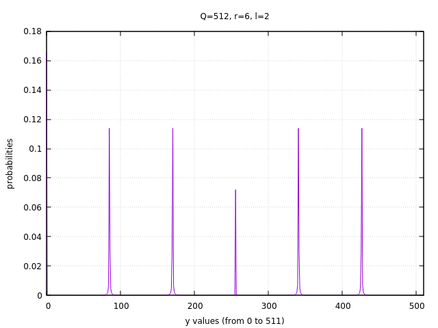
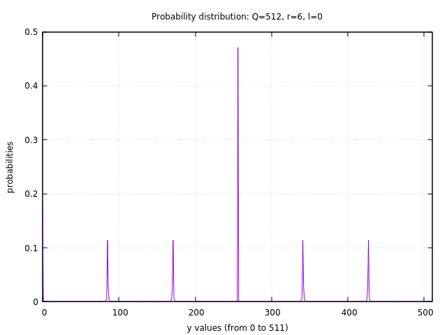

用Lisp可视化量子因式分解Shor算法的例子
Ping Zhou, 2021-06-11
在前文中我初步尝试了Lisp的数值计算和绘图功能，本着“拿着锤子找钉子”的精神，这次我们来搞个实际的应用，用Lisp来演示和可视化量子因式分解算法（Shor算法）。
首先还是引用numcl和vgplot包：
(ql:quickload :numcl) (ql:quickload :vgplot)
假设我们要分解的数是N（前文的例子中N=21），Shor算法需要先在1到N-1之间随机选一个与N互质的数a，然后用量子计算求解函数 \(f(x)=a^x \mod N\) 的周期r。要可视化这个求解的过程，我们得先知道r，所以先写个辅助函数：
(defun a-x-mod-N (a x N) (mod (expt a x) N)) ;; Find order for function f(x)=a^x mod N ;; also returns the "modulo sequence" of the function. ;; E.g. a=11, N=21 -> returns order r=6 and sequence (1 11 16 8 4 2) (defun shor-find-mods (a N) (labels ((next-mod (a x N mods) (let ((r (a-x-mod-n a x N))) (if (equal r (car mods)) ; check if the mod sequence is repeating mods ; stop when mod sequence starts repeating (next-mod a ; otherwise continue with a^(x+1) mod N (+ 1 x) N (append mods (list r))))))) (let ((mod-seq (next-mod a 0 N nil))) ;; "values" returns multiple values ;; By default the first value is used, but caller can get other values using ;; multiple-value-bind: ;; (multiple-value-bind (a b) (foo)) (values (length mod-seq) mod-seq))))
a-x-mod-N 函数很简单，就是返回 \(a^x \mod N\) 的值。
shor-find-mods 从x=0开始，逐个计算 \(a^x \mod N\) ，把结果记录到一个序列里，直到序列里发现重复，这时候序列的长度就是函数的周期r。另外序列本身也作为副产品返回给调用方。例如在前文的例子中，N=21，a=11 ，返回的序列就是 (1 11 16 8 4 2)，周期是6:
CL-USER> (shor-find-mods 11 21) 6 (3 bits, #x6, #o6, #b110) (1 11 16 8 4 2)
然后演示的核心函数：计算运行量子电路后，测量得到每个y的可能性。
;; q: 2^n, determined by how many qubits we use (N^2 <= Q <= 2*N^2) ;; r: the period of function a^x mod N (e.g. N=21, a=11 -> r=6) ;; l: the offset ;; y: the "y" value for calculating its probability, from 0 to Q-1 (defun shor-qft-prob (q r l y) (let* ((m (+ 1 (numcl:floor (/ (- q l 1) r)))) (qm-inv (/ 1 (* q m)))) (cond ((= y 0) (/ m q)) ((< y q) (* qm-inv (/ (expt (sin (/ (* pi m r y) q)) 2) (expt (sin (/ (* pi r y) q)) 2)))) (t (error "y must be integer between 0 and q-1")))))
这个函数 shor-qft-prob 有四个输入：
q就是我们的量子位能表达的最大的二进制数，用n个量子位的话，q就是 \(2^n\)r就是前面求出的函数周期l就是前文中的“offset”，在0到r-1之间y在0到q-1之间，这个函数返回测量得到它的可能性
然后，对y=0到q-1分别调用上面的函数 shor-qft-prob ，得到X和Y轴的序列，用于绘图：
(defun shor-compute-probs (q r l) (let* ((Ys (numcl:arange q)) (Cy (mapcar (lambda (y) (shor-qft-prob q r l y)) (coerce Ys 'list)))) Cy))
可视化函数 shor-compute-probs-vis ，X轴是0到q-1，Y轴就是对应的概率。
(defun shor-compute-probs-vis (q r l) (let ((x (vgplot:range q)) (y (shor-compute-probs q r l))) (progn (vgplot:plot x y) (vgplot:axis (list 0 (- q 1))) (vgplot:xlabel (format nil "y values (from 0 to ~a)" (- q 1))) (vgplot:ylabel "probabilities") (vgplot:title (format nil "Probability distribution: Q=~a, r=~a, l=~a" q r l)))))
试试我们的可视化函数：
(shor-compute-probs-vis 512 6 2)

调整一下offset (l=0)：
(shor-compute-probs-vis 512 6 0)

Lisp真有意思啊！